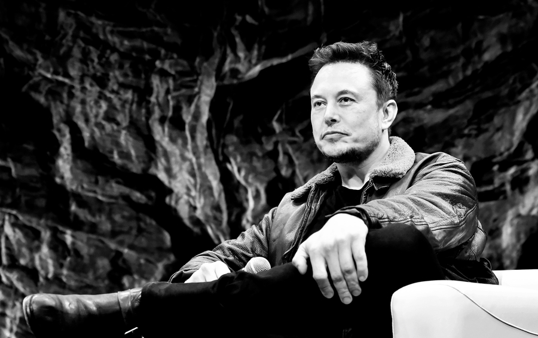

Железный человек. История успеха Илона Маска
У всезнайки Илона Маска, которому в детстве одноклассники сломали нос, есть три амбициозные цели.
Одну он уже практически реализовал, превратив интернет-банкинг в вещь, доступную почти повсеместно. Осталось остановить глобальное потепление и отправить людей на Марс

Илон Маск родился в 1971 году в Претории, в Южно-Африканской Республике. Когда Илону было десять лет, его родители — канадская модель и южноафриканский инженер–электромеханик — развелись, дети (а у Маска были брат и сестра) стали жить в основном с отцом в Африке. Как утверждает Washington Post, отец Маска был человеком жестким и соответствующим образом обращался с детьми, например, заставлял их часами сидеть молча и слушать его нравоучения. Не лучше ситуация была и в школе. Одноклассники смеялись и издевались над замкнутым ботаником Илоном, а однажды избили его так сильно, что пришлось восстанавливать сломанный нос в больнице. Маск все больше замыкался в себе, его отдушиной стал компьютер. Он научился программировать на простеньком домашнем компьютере Commodore VIC-20 и даже разработал космическую аркаду Blastar, продав которую заработал первые $500.
В 17 лет Илон Маск уехал в Канаду, чтобы избежать призыва в армию и не участвовать в политике апартеида. Сначала он поступил в Университет Куинс в Кингстоне, штат Онтарио, а спустя два года перевелся в Университет Пенсильвании, где получил степени бакалавра по физике и по экономике Уортонской школы. Позднее Маск говорил о том, что физика дала ему очень хорошую структуру мышления: сначала раскладывать вещи до фундаментальных основ, а затем отталкиваться уже от них. Затем Маск поступил на докторскую программу Стэнфорда, чтобы бросить ее через пару дней и сфокусироваться на своем стартапе Zip2, который совмещал карты городов и данные справочника «Желтые страницы». Спустя два года продажа Zip2 принесла Маску $22 млн.
В самом начале своей карьеры предпринимателя Маск поставил перед собой несколько целей. Перечислим их по возрастанию амбициозности: сделать интернет-банкинг проще, остановить глобальное потепление и превратить людей в мультипланетный вид. В принципе можно сказать, что все идет по плану: Илон Маск создал и запустил PayPal, Tesla Motors, Solar City и SpaceX и по праву носит звание главного изобретателя современности. Джон Фавро, режиссер серии фильмов «Железный человек», признавался, что его образ миллионера–супергероя Тони Старка основан на личности Маска. Сам Маск даже появился в роли самого себя во второй части франшизы, а некоторые эпизоды фильма были сняты в штаб-квартире SpaceX.
Вечером 7 августа
Илон Маск в лучших традициях Дональда Трампа опубликовал загадочный твит, в котором сообщил, что собирается выкупить все акции Tesla с биржи по цене $420 и у него уже есть на это средства. Напомним, личное состояние Маска оценивается немногим менее $20 млрд, притом что сумма сделки должна была составить все $49 млрд.
Через два часа на сайте Tesla появилось обращение Маска к сотрудникам, в котором он объяснял, что необходимость демонстрировать хорошую отчетность и большое количество спекулянтов, играющих на падение акций, отвлекают компанию от долгосрочной стратегии. Очевидно, на тот момент Макс еще не согласовывал свои планы с советом директоров. Более того, после его твита цена акций существенно изменилась. Маск не мог не знать об эффекте своего анонса, и вся ситуация может быть расценена как попытка манипулировать рынком. Дальше — больше. Потенциальным покупателем был объявлен арабский фонд, но так как производство электроносителей является стратегической отраслью в США, иностранные инвесторы должны получать одобрение. На тот момент никаких договоренностей не было.
На выходных Илон Маск, видимо, хорошенько подумал, оценил перспективы и решил выбрать наименьшее из зол. В субботу было объявлено, что он готов пойти на сделку с SEC — выплатить $20 млн штрафа и покинуть пост председателя совета директоров Tesla. Также согласно требованиям SEC, Tesla должна будет добавить двух независимых директоров и создать комитет по контролю за коммуникациями Илона Маска. С учетом того, что он остается CEO компании, а совет директоров Tesla состоит из девяти человек — сам Маск, его брат и еще три человека, которых нельзя назвать независимыми, — это довольно мягкий исход. Ну а самой компании, действительно, не повредят перемены в корпоративном управлении, ведь ситуация, когда один и тот же человек является и CEO, и председателем совета директоров, — классический пример нарушения стандартов и базы для конфликта интересов. Тем более что в прошлом году миноритарии Tesla уже обращали внимание на ситуацию с корпоративным управлением.